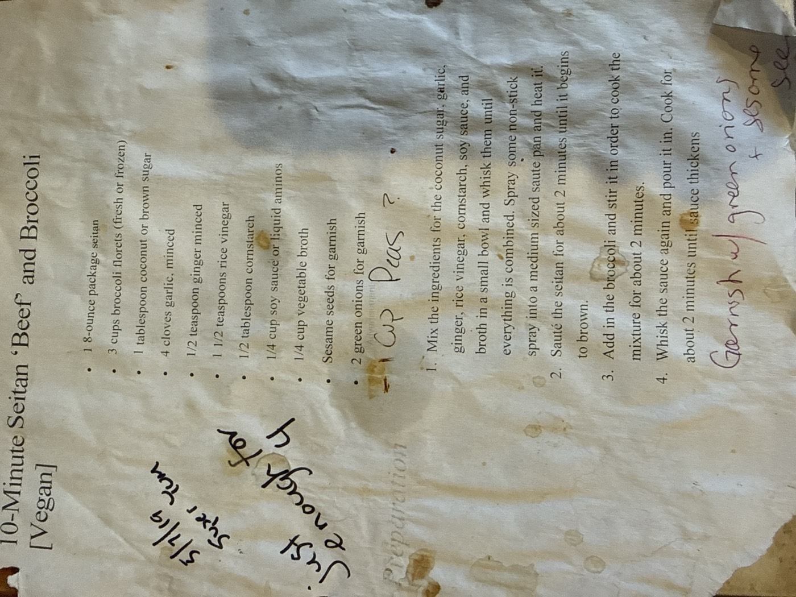

10-Minute Seitan ‘Beef’ and Broccoli

A fast weeknight stir-fry that leans on store-bought seitan in place of beef, browned quickly and tossed with broccoli in a soy-ginger sauce rounded out with coconut sugar and rice vinegar. The card's margin notes tack on a tentative "1 cup peas?" and confirm it's "just enough for 4."
4servings
~10 minactive time
Vegandiet
Ingredients
- 1 (8-ounce) package seitan
- 3 cups broccoli florets (fresh or frozen)
- 1 tbsp coconut sugar or brown sugar
- 4 cloves garlic, minced
- ½ tsp ginger, minced
- 1½ tsp rice vinegar
- ½ tbsp cornstarch
- ¼ cup soy sauce or liquid aminos
- ¼ cup vegetable broth
- 1 cup peas (optional — penciled in on the card)
- Sesame seeds, for garnish
- 2 green onions, sliced, for garnish
Method
- Make the sauce. Whisk together the coconut sugar, garlic, ginger, rice vinegar, cornstarch, soy sauce, and vegetable broth in a small bowl until combined.
- Heat the pan. Spray a medium sauté pan with non-stick spray and heat it.
- Brown the seitan. Sauté the seitan for about 2 minutes, until it begins to brown.
- Add the broccoli. Stir in the broccoli (and peas, if using) and cook for about 2 minutes.
- Sauce it. Whisk the sauce again, pour it into the pan, and cook for about 2 minutes, until it thickens.
- Garnish and serve. Top with sliced green onions and sesame seeds.
Peas: the card pencils these in as a maybe — add 1 cup with the broccoli if you want them.
Serves 4 per the card's own margin note: "just enough for 4."